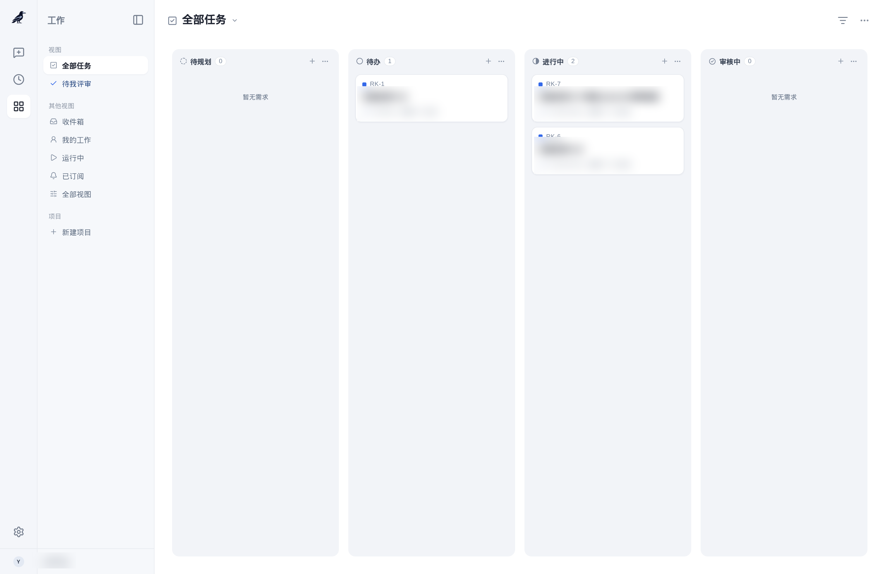

Rook 看板全高泳道
v2026.1125.015 · 2026-11-25复刻 Multica 看板泳道：问题、实现与线上验收。依据 Multica 本地源码（c33158bf）、线上 Playwright 测量与发布记录。
v2026.1125.015 已上线。看板从 1036px 居中窄条改为 Multica 式全高泳道：看板宽 min(80vw, 100%) 居中，2560 视口下 2048px、四列各 496px；1512 视口下 1204px、四列各 285px。
列背景为浅灰圆角、列间距 16px、列高撑满内容区；卡片区在列内独立滚动、列头固定；空状态在列内居中。列表视图保持 1036px，已验收的需求页未改动。
已知边界：视口窄于约 1450px 时列宽停在 280px，列区改为横向滚动；容器宽 ≤800px 沿用原两列网格。与 Multica 行为一致。
问题与目标
为什么改：v014 的 1036px 居中看板在 2K 和 MacBook Pro 14 寸下都被否决。
- 窄带。v014 把看板锁在 1036px：2560 视口的内容区有 2252px，看板只占中间一条，四列各 253px。
- 列高不撑满。列按内容停在
min-height: 500px，视口越高，列下方空白越大。 - 目标。列改成 Multica 的做法：全高泳道、列内独立滚动；看板宽约 80%，其余结构（列表、需求页）不动。
| 视口 | 看板宽 v014 | 列宽×列高 v014 | 看板宽 v015 | 列宽×列高 v015 |
|---|---|---|---|---|
| 2560×1440 | 1036 | 253×500 | 2048 | 496×1326 |
| 1512×982（MBP 14″） | 1036 | 253×500 | 1204 | 285×868 |
Multica 的做法
参照 Multica 前端（本地 checkout c33158bf）的看板实现，按结构逐条对照。
- 泳道行（
board-view.tsx:846）：flex flex-1 min-h-0 gap-4 overflow-x-auto p-2。行撑满剩余高度，列间距 16px，列放不下时由这一行横向滚动。 - 列（
board-column.tsx）：BOARD_COL_WIDTH = 280，rounded-xl bg-muted/40 p-2，浅灰圆角底、无边框；列头mb-2 px-1.5。 - 列体：
flex-1内套一层absolute inset-0 overflow-y-auto rounded-lg p-1，只有卡片区滚动，列头不动。 - 卡片（
board-card.tsx）：白底rounded-lg border-[0.5px] bg-surface py-3 px-2.5 shadow，卡片间距 8px。 - 空状态：
py-8 text-center，文案「无任务」，居中在列体。
Rook 的实现
改动两个文件：列体结构放进 web/kanban.tsx，布局规则放进 web/style.css 的 @container (width > 800px)。
- 列体容器。
.kanban-column去掉边框；卡片和空状态包进.kanban-column-body，列头留在列体之外，滚动时固定。 - 看板视图限定。
.kanban-board:has(.kanban-columns)只在看板存在列时生效，列表视图不进入新布局，仍是 1036px。 - 高度链路。看板、列、列体一路
flex: 1; min-height: 0，列高由内容区决定；列体overflow-y: auto接管滚动。 - 需求页不动。详情页的
@container规则与本次改动隔离，验收结果保持。
/* @container (width > 800px) */
.kanban-board:has(.kanban-columns) {
flex: 1; min-height: 0;
width: min(80vw, 100%); max-width: none;
}
.kanban-columns {
display: flex; flex: 1; min-height: 0;
gap: 16px; padding: 8px;
align-items: stretch; overflow: auto hidden;
}
.kanban-column {
flex: 1 1 0; min-width: 280px;
min-height: 0; overflow: hidden;
}
.kanban-column-body { overflow-y: auto; padding: 4px; }效果与测量
MacBook Pro 14 寸等效视口（1512×982，Retina 2×）的线上截图；下方表格给出 2560 与 1512 两档的实测值。

| 指标 | 2560×1440 | 1512×982 |
|---|---|---|
| 看板宽 | 2048 | 1204 |
| 列宽 × 列高 | 496×1326 | 285×868 |
| 列间距 | 16 | 16 |
| 列底与内容区底部 | 齐平（留 30） | 齐平（留 30） |
| 空状态 | 列内居中 | 列内居中 |
| 列表视图宽 | 1036 | 1036 |
| 需求页评论框 | 钉在页块底边 | 钉在页块底边 |
向列体追加 2200px 内容后，只有列体滚动；列头位置不变，外层页面 scrollTop 保持 0。
回归与边界
新布局只在容器宽大于 800px 且处于看板视图时启用，其余保持原样。
- 列表视图。
:has(.kanban-columns)把列表排除在新规则外，两种视口下都保持 1036px 阅读宽度。 - 需求页。v2026.1125.014 验收过的 1036px 居中和评论框钉底均未改动；本轮复测评论框底边仍等于页块底边（2560 下 1416/1416，1512 下 958/958）。
- 窄视口。列宽
min-width: 280px；视口窄于约 1450px 时四列放不下，列区改为横向滚动，与 Multica 一致。 - ≤800px 容器。沿用原有两列网格（如 1024 窗口内容区 760px），本轮不改。
- 单列筛选。筛选某一状态时列宽固定 420px，沿用原规则。
本轮验收只做布局与滚动测量，没有执行真实模型发送；发布基线为 v014 的 1036px 线上构建。
发布与验收
源码 → 构建 → Caster 发布 → 线上核对，全部通过后合并 MR。
| 环节 | 结果 |
|---|---|
| 源码 | 分支 release_fix/kanban-board-multica-20261125，提交 572b2eb；MR !172 合并为 564df9d |
| 检查 | npm run check 通过；npm test 447 项（321 通过、126 跳过、0 失败）；npm run build 通过 |
| 构建 | Nyx 构建 3165076，镜像 tag 以 572b2eb…-nyx 结尾，版本 v2026.1125.015 |
| 发布 | Caster 发布单 3051173（配置 528681、sh001、1 副本、rolling），23:16:00 创建，23:18:23 完成 |
| 实例 | 新实例 23:16:18 启动，Running / healthy / discovery up |
| 线上核对 | /healthz、/readyz（blockers 为空）、/chat、/api/me 均 200；构建号出现在 index-C57bKb2Y.js；index-CdkbsLCD.css 含 10 条泳道规则 |
| Paladin | 发布前核对源与目标配置：无待发布 config 变更，无需同步 |